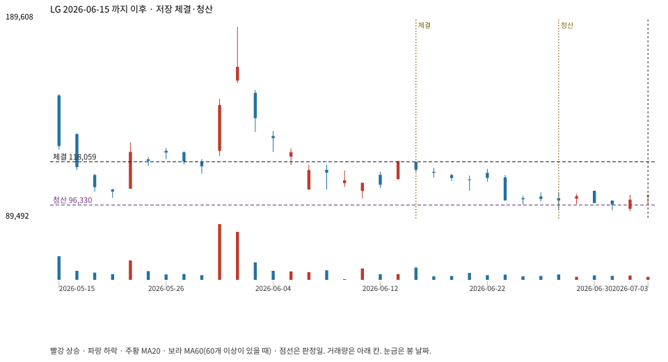

계좌를 다시 돌리지 않았다. 아래는 저장된 주문·체결·청산·비용·손익이다.

{
"case_id": "4dd529aa5bcce261",
"status": "closed",
"trade": {
"symbol": "003550.KS",
"signal_date": "2026-06-15",
"quantity": 49,
"entry": 118400,
"stop": 96378,
"target": 185900,
"planned_risk": 1091961.0217389998,
"reserved_cash": 5807401.6,
"fill": {
"date": "2026-06-16",
"price": 118059,
"fee": 5784.8910000000005
},
"exit": {
"date": "2026-06-26",
"price": 96329.811,
"reason": "stop",
"net_pnl": -1075235.3127389988,
"ambiguous_bar": false
}
},
"cost": "research fee 10bp each side, slippage 5bp; amounts below are the stored ledger, not a new run",
"chart": "c\/4dd529aa5bcce261.svg"
}